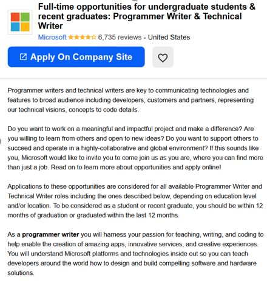

Hi!
My name is Katelyn Knight, I'm eighteen years old and I was born and raised in Australia which is where I still currently reside. I am presently studying my Bachelor of Information Technology at RMIT which will equip me to begin studying programming languages such as Java, HTML and CSS as well as setting me up to learn things such as; designing applications for consumers and making databases for businesses. I have completed my year 12 VCE at Mildura Senior College in 2019 which I loved participating in. My beloved pastimes consist of programming, digital drawing and gaming.
My particular interest in IT includes programming and web programming, as I find it fun and fascinating. I have always been interested in technology and IT for as long as I could remember ever taking a keen interest in computers. I was unfortunate growing up, unable to have a computer for most of my childhood. However, through working hard, I saved up enough money to purchase my desktop, which I built with a few friends. The leading contenders in pushing me to keep up with IT and seek education further were my friends whom all were studying different fields relating to IT in year 11 and 12. I am positively intrigued from technology and IT as I believe that not only is it the way of the future it is also something I love to involve in every aspect of my life due to its incredible potential to be unbelievably extraordinary. I originally was debating between Monash and RMIT as a potential university. However, I landed on RMIT being the one I chose due to its prestigious reputation with technology and being favoured among employers for producing desirable employees. One of the other reasons I decided RMIT Melbourne City is due to the location as well as the stunning and exciting building design. During my time at RMIT, I expect to learn how to properly and adequately program code, build web pages and databases as well as design applications centred around consumers. I hope RMIT will prepare me for the workforce such as teamwork, presenting and creating an appropriate skillset needed to get the job done, thus creating a suitable and preferable candidate for employers.
My ideal job in the IT industry would be an application programmer for various companies such as Microsoft. A job I found via Indeed was a Full-time program writer for undergraduate students with Microsoft.
Having the opportunity to work at Microsoft within this field sounds appealing as the feeling to make a difference in the world of technology sounds exciting, not to mention that working with others is a window to more opportunities and ideas expanding creativity with multiple minds from different backgrounds. The skills and qualifications include being fluent in various languages such as C/ C++/ C# /Java, considerably above average writing skills and a bachelor's degree in engineering, computer science or related field. There is no previous experience needed, but it is preferred. I currently have the bare minimum possible for the qualifications required for this position, but that is why I am enrolled in an information technology degree. I plan on working as best as I can to build skills and qualifications as needed to become a desirable candidate for a position such as this. I also plan on making programs in my free time to build fluency and familiarity in coding, further developing my skills.
In the Myer-Briggs personality type I got ESFP-T, "The Entertainer". it details that; being more on the extraverted side I can take a social and relaxed attitude and use it to get everyone else on board with practical tasks that need to be done, which details feel as though my personality type will benefit the workforce. As I can carefully listen to instructions and follow them to the last detail, as well as having desirable traits for a "manager" position as ESFP-T personality types are great at noticing others moods, co-workers are always encouraged to speak their mind, and people with this personality type are still happy to hear others out. Therefore, I would have the ability to relate to others and think on my feet, resulting in being a resourceful and inspiring leader. The results from the test positively influence my behaviour in a team, as I love to work with people to get jobs done as it brings insight from people all around the world and workforces.
I also additionally scored a 78% in extraversion which indicates that that people who are more extraverted seek stimulation from the outside world, especially in the form of attention from other people which indicates that I would be most preferable in group situations with others to promote group work to get to the end goal or reach any important milestone.
The results from the different types of learning types indicated that I was more on the auditory side. I can use this learning style to significantly further the way I learn by ameliorating my skills for my future. I think these results will benefit the team as I am able to pick up more auditory queues when working with a group when hectic or calm. When forming a group, I would choose to have personalities of different types as well as people who learn in different ways.
A future project I would love to do would be to make a "robotic tabletop pet", only around 3*3 inches in size it will roam around the consumers table acting as a small companion. This robot will show varieties of emotions and display affection to ensure the user has a sense of happiness in the presence of this "pet". I also intend on making the robot able to interact with its surrounding and recharge itself on a home station like a "Roomba".
Many people in tiny apartments in major cities and even smaller suburbs and city towns frequently live alone. Being alone too often takes a major toll on mental health, and these people live in areas who can not get any pets or companions due to rental rules, in particular university students in private housing in a recent study from HESA indicated that there was a 210% increase in the number of students who left university as a result of mental health issues between 2010 and 2015. To combat these numbers even slightly, I want to make this little robot to replenish some happiness in people and students left alone.
I will need Raspberry Pi technology using the Python programming language, as I believe It is most appropriate for a project like this one, as the Raspberry Pi computer has built in Bluetooth and Wi-Fi adaptors to create the software necessary to run the robot in the way I have envisioned it. I will also be needing a LCD screen itself for the display of the expressions and various interactive features. I will also be needing a soldering iron and solder with various other electronic components including, but not limited to, resistors, capacitors, LED's and diodes. I will also need an ultrasonic proximity sensor for the robot to be able to detect obstacles and move around them.
Knowledge of various things is critically vital, I will need knowledge of the Python syntax and Raspberry Pi Python module, electronics, Raspberry pi and obstacle detection technology. It will be reasonably easy to find the objects needed; you are able to find them on places like eBay. It will additionally easy to learn Python through services such as Code Academy, Free Code Camp and w3schools. However I believe it will be more difficult to find the resources on how to build a robot from scratch without previous knowledge of electronics where you may need to further education on like learning Python and how to put everything on a Raspberry Pi.
If this project succeeds at what I am intending to overcome, those who struggle with loneliness will be able to get some comfort and companionship out of the robot to reduce the dropout rate of universities and lower the mental illness rates throughout the world. An impact this development could have on the world is the lower rates mentioned before but the possibility of people being less afraid of autonomous robots slowly being integrated into our world bringing a new era of technology.